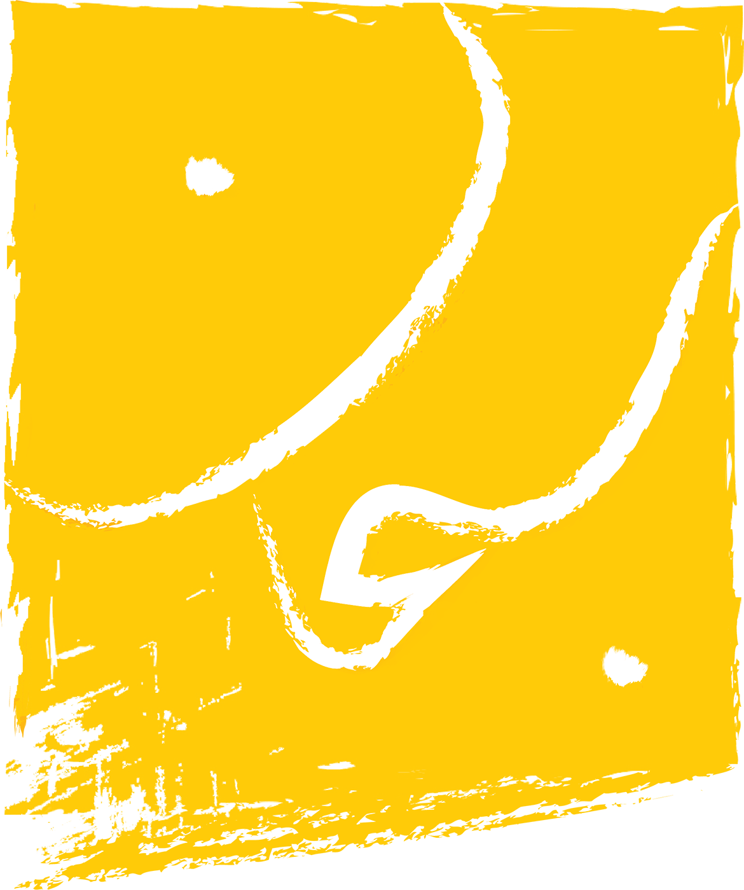

Since 2004
About Sobhan
Founded and directed by Firoozeh Zomorodian, Sobhan opened in December 2004 in Kamranieh, Tehran. An international art gallery dedicated to promoting image-based media through exhibitions of contemporary and modern art.

“Our goal is a flowing dialogue between the art and its audience.”
Sobhan is an artistic society with its own unique and distinguished philosophy, to create and incite the highest level of energy and inspiration in the art community worldwide. Its global view included but not limited to gather a selective collections of the best of the best art works around the world.
Sobhan Gallery is an outstanding showcase of a highly diverse and talented community of artists, collectors, consultants, architects and interior designers. It is committed to deliver a top of the line platform to attract professional artists.
Either if you are new to the art community, or you are an experienced collector of fine arts, Sobhan is offering an inviting environment of talents, wide selection of arts and a multitudes of genres.
Sobhan Gallery has the capacity and the will to foster and direct the young and upcoming, or the established artists. These resources will eventually help our artists to promote their work individually in the business or academic world.
It is our pride that we are working with a selected and experienced staff who are committed to the highest level of service . Your visit will be filled with a wide range of exhibits, and the knowledgeable staff procuring the highest quality.
It is worth mentioning, that our success derives from our creative artists and their works. This relationship gets us closer to our goal which is a flowing dialogue between the art and its audience.
From the earlier gallery introduction
Sobhan, is an artistic society with a distinctive and unique philosophy, and has high energy and inspiration to create conventional trends. With display of diverse collections of updated fine arts by their members around the world, this society powerfully tries to make global goals. Sobhan formed from talented contemporary artists, collectors, enthusiasts, consultants, architects and interior designers. Its mission is to offer an assured platform to attract professional artists and art lovers in a way that nobody has stepped in. That you just have decided to buy the first art work or has a set of valuable works are not very different; In any case, Sobhan gallery, dedicated a warm and intimate environment for you as a buyers and Interested viewers, that exhibits a wide range of contemporary art, and introduce young and empower artists. Sobhan, also with providing a protective and reliable condition, fosters talented artists. Therefore, through this way, you as dear artists can upgrade your brand, academic or personal information. We are also able to give assurance for professional buyers of art works In addition to access to a range of carefully selected and provided collection of contemporary art, simultaneously have a great interactive with our experienced staff. It should be noted that the key to our success relying on creative artists and their works, and mutual respect that close us in the Sobhan gallery to our single goal that is relationship between art and its audience.
Visit
Our location
Address
Sobhan Gallery
No.4, Besat Alley, Pishtaz Avenue, Abbasi St, After Sadr Underpass, Kamranieh Exit, East Sadr Highway, Tehran, Iran
Telephone
(0098) 21-222-31-480
Telefax (0098) 21-222-02-256
info@sobhangalleries.com
sobhangallery@gmail.com
sobhan_gallery@yahoo.com